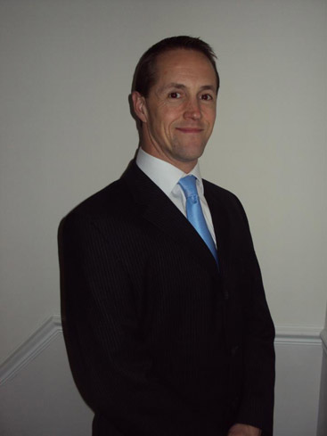

Who We Are
David has worked in Accountancy for over 20 years. He graduated with an Honours degree in Accounting from The University of Birmingham and then trained as a Chartered Accountant with Coopers & Lybrand in Cardiff, building up his experience of preparing accounts and auditing a diverse range of large and small businesses from across South Wales and beyond.
After qualifying as a Chartered Accountant, David then moved from Practice to Industry building up his experience in the world of Commerce by working for a number of large and small Companies gaining further hands on experience of Internal Auditing, Financial Accounting, Management & Cost Accounting and was responsible for running the Finance Departments of a number of Companies.
David then returned to his roots and set up his own Accountancy Practice, using his vast experience and business knowledge to offer his clients an unrivalled service, helping them to run their businesses effectively and efficiently, as well as taking care of their Accounts and Tax requirements, ensuring they run their business in the most tax-efficient manner.
History
- 2012
Established David Roberts Accountancy Services, helping clients of all sizes in South West Wales and the surrounding areas easr their accounting headaches.
- 1997
Qualified as a Chartered Accountant with the Institute of Chartered Accountants in England & Wales.
- 1993
Qualified from Birmingham University with a degree in Accounting.
Why David Roberts?
 Personal Service
Personal Service
Every client of David Roberts Accountancy Services gets a direct line and mobile number as a point of contact. We love it when our clients speak to us.
Client First Approach
David Roberts is an advocate of only having to pay the minimum amount of tax as is legally required. He will work with you to ensure you don't pay more than you have to.
Quality Advice
In these difficult times sound, clear advice goes a long way to maximising your profitability and maintaining your cash flow.